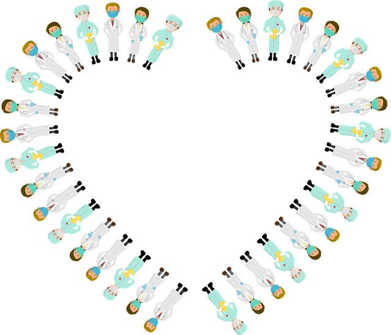

Seja mais uma vez bem-vindo/a à essa família!
Faremos uma breve introdução sobre as nossas ideias e a melhor forma de conseguir um melhor resultado ao trabalhar com o nosso sistema.
Dividimos o sitema em duas etapas únicas por se tratar de um sistema de atendimento para consultórios médicos...
Antes que se pergunte... Não, não gerenciamos nada. Somente atendemos!
Obrigado pela compreensão.
Como anteriormente diziamos, as etapas são categorizadas em primeira fase(fase inicial) e segunda fase(fase final).
A primeira fase : consiste na chegada do paciente e na recolha dos seus dados, tanto os pessoais quando os vitais, sem esquecer de fazer a respectiva anamnese e a marcação dos exames.

A segunda fase : consiste na volta do paciente com o resultado do/s exame/s, pronto para receber o diagnóstico e a receita.